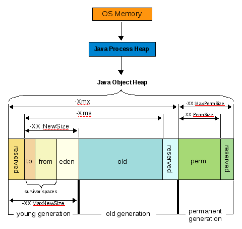

Session Beans
Session Beans
Introduction
Les session beans sont les composants EJBs qui définissent les services.
Ce sont les équivalents des @Component et @Service spring.
Il y en a plusieurs types :
- @Singleton : les services sans état
- @Stateless : les services sans état (disponibles dans un pool)
- @Stateful : les services avec état conversationel (gestion de session)
Branche git
On crée la branche ejb à partir de la branche master.
> git checkout master Switched to branch 'master' > git checkout -b ejb Switched to a new branch 'ejb'
Embedded Glassfish
Pour faire des EJBs, le plus simple est d'utiliser un conteneur d'application.
Glassfish est l'implémentation de référence produite par oracle.
Il est normalement dans les premiers à implémenter les nouvelles spécifications.
La version embedded (embarquée) permet de lancer une application sous glassfish en ligne de commande.
On commence par ajouter le plugin qui permettra de lancer glassfish comme on le fait avec tomcat.
<plugin>
<groupId>org.glassfish.embedded</groupId>
<artifactId>maven-embedded-glassfish-plugin</artifactId>
<version>4.0</version>
<configuration>
<ports>
<http-listener>8080</http-listener>
</ports>
<contextRoot>/</contextRoot>
</configuration>
</plugin>
La ligne de commande pour démarrer glassfish en embedded est :
mvn embedded-glassfish:run
Si on teste cette commande avec notre application, elle devrait tourner comme avec tomcat sur http://localhost:8080/index (attention le glassfish-embedded-all-4.0.jar est un peu long a récupérer).
Le plugin fonctionne un peu différemment du plugin tomcat : la commande démarre le serveur, déploie l'application et passe en mode interactif.
On peut donc simplement redéployer l'application en tapant ENTER.
Vu le fonctionnement du plugin, il vaut mieux monter un peu la taille mémoire de la jvm et définir :
export MAVEN_OPTS="-Xmx512m -XX:MaxPermSize=256m"
Les options Xmx et XX:MaxPermSize sont les zones indiqués sur le schéma suivant :
Un premier session bean
Nous allons nous servir de la spécification EJB 3.1 afin de pouvoir ajouter des EJBs dans notre war.
Pour avoir les éléments de la spécification disponibles, nous utilisons le jar mis à disposition par redhat.
<dependency>
<groupId>org.jboss.spec.javax.ejb</groupId>
<artifactId>jboss-ejb-api_3.1_spec</artifactId>
<version>1.0.2.Final</version>
<scope>provided</scope>
</dependency>
Attention, tout ce que nous allons écrire à partir d'ici ne fonctionnera pas sous tomcat mais uniquement dans des serveurs d'application.
Le fichier ejb-jar.xml (descripteur de déploiement des ejbs) étant optionnel, nous allons nous en passer.
Dans le package fr.todooz.ejb on crée la classe suivante :
@Singleton // instance unique de ce service dans l'application @Startup // instancié au démarrage de l'application public class HelloEJB { @PostConstruct public void hello() { System.out.println("\n\n\nhello app serv\n\n\n"); } }
Le message devrait s'afficher dans le flot de choses écrites dans la console.
Attention : le plugin glassfish charge le war présent dans le répertoire target. Pour qu'une modification soit prise en compte, il faut donc faire un mvn package avant de taper ENTER.
Cela limite quelque peu la promesse de re déploiement à chaud.
Depuis une servlet
Afin de rendre ce service un peu interessant, il faut pouvoir l'utiliser depuis un autre composant.
Dans un conteneur EJB, on utilise la notation @EJB afin d'obtenir une référence.
public class HelloEJB {
public String hello(String name) {
return "Hi " + name;
}
}
D'un EJB vers un autre
@Singleton
public class MoreSeriousEJB {
@EJB
private HelloEJB helloEJB;
public String hello(String name) {
return helloEJB.hello(name);
}
}
Et depuis la servlet HelloWorldServlet.
public class HelloWorldServlet extends HttpServlet {
private static final long serialVersionUID = 1L;
@EJB
private MoreSeriousEJB moreSeriousEJB;
@Override
protected void doGet(HttpServletRequest request,
HttpServletResponse response) throws ServletException, IOException {
response.getWriter().write(moreSeriousEJB.hello("EJBs"));
}
}
Si on regarde sur http://localhost:8080/HelloWorldServlet, on obtient bien le résultat attendu.
Hi EJBs
Notre servlet a donc bien trouvé le premier EJB qui a lui même trouvé le second.
Nous avons donc un conteneur qui fait de l'injection entre nos composants EJB.
Si on regarde coté nouvelles spécification jee, il serait même possible de se passer du web.xml et de tout faire par annotations (mais ce n'est pas le sujet ici).
Depuis un Controller spring
Depuis un controller spring, c'est guère plus compliqué.
Dans le controller, on injecte l'EJB avec l'annotation standard.
@Controller
public class IndexController {
@EJB(mappedName = "java:module/MoreSeriousEJB")
private MoreSeriousEJB moreSeriousEJB;
@RequestMapping("/hello")
@ResponseBody
public String hello(Model model) {
return moreSeriousEJB.hello("EJBs from Controller");
}
}
Le nom jndi (mappedName) est standardisé depuis les EJB 3.1 : il est le même quel que soit le serveur d'application.
Depuis un Controller spring (bis)
Il est aussi possible de récupérer un référence vers un ejb comme si c'était un composant spring.
On commence par ajouter le namespace jee au contexte spring
<beans ... xmlns:jee="http://www.springframework.org/schema/jee" xsi:schemaLocation=" ... http://www.springframework.org/schema/jee http://www.springframework.org/schema/jee/spring-jee-3.0.xsd">
Ce qui nous permet d'écrire.
<jee:jndi-lookup id="moreSeriousEJB" jndi-name="java:module/MoreSeriousEJB" />
Et enfin dans le controller avec @Inject.
@Controller
public class HelloController {
@Inject
private MoreSeriousEJB moreSeriousEJB;
@RequestMapping("/hello")
@ResponseBody
public String hello(Model model) {
return moreSeriousEJB.hello("EJBs from Controller");
}
}
Sur http://localhost:8080/hello on a donc.
Hi EJBs from Controller
On a donc une intégration un tout petit peu plus complexe pour le même résultat.
@Schedule
Il est possible de planifier l'exécution d'une méthode par une simple annotation.
private int count = 0;
@Schedule(hour = "*", minute = "*", second = "*/5")
public void endlessly() {
System.out.println(helloEJB.hello("" + count));
count++;
}
Ce qui donne
Hi 1 Hi 2 Hi 3
Spring possède une annotation équivalente.
@Asynchronous
L'annotation @Asynchronous permet d'exécuter une méthode en asynchrone.
L'appel est donc instantané pour l'appelant.
Pour l'exécution, le conteneur se charge d'exécuter la méthode dès que possible.
Par exemple, la méthode est un processus long alors que l'on souhaite récupérer la main rapidement.
La mise en place est simple.
@Asynchronous
public void startSomethingLong() {
...
}
@Asynchronous
public Future<Result> startSomethingLongToo() {
...
}
En conséquence, le type de retour est limité aux types suivants :
- void : pas de retour
- Future<T> : permet d'avoir un retour à la fin de l'exécution asynchrone (callback)
L'avantage important est que l'on ne manipule pas de Thread soit même.
Spring possède une annotation équivalente.
Un bémol
Les EJBs 1.0, 2.0 et 2.1 étaient un enfer.
Les spécifications 3.0 et 3.1 ont apporté une simplication longuement attendue.
Les spécifications actuelles sont plus modulaires (JPA, CDI, EJB Lite...) et plus faciles a intégrer.
Cependant, même si les EJBs 1 sont morts, beaucoup d'EJBs 2.x sont encore dans la nature.
Il faut donc s'attendre parfois à beaucoup de lourdeur par rapport à des spécifications plus récentes.